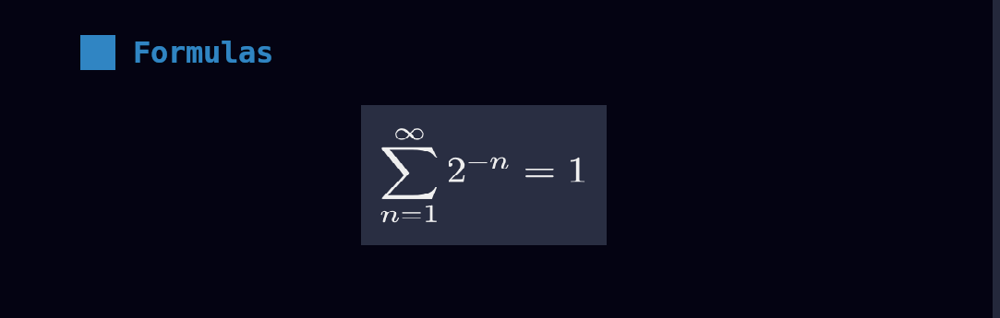

LaTeX and typst
latex and typst code blocks can be marked with the +render attribute (see highlighting) to
have them rendered into images when the presentation is loaded. This allows you to define formulas in text rather than
having to define them somewhere else, transform them into an image, and them embed it.
Dependencies
typst
The engine used to render both of these languages is typst. typst is easy to install, lightweight, and boilerplate free as compared to LaTeX.
pandoc
For LaTeX code rendering, besides typst you will need to install pandoc. How this works is the LaTeX code you write gets transformed into typst code via pandoc and then rendered by using typst. This lets us:
- Have the same look/feel on generated formulas for both languages.
- Avoid having to write lots of boilerplate LaTeX to make rendering for that language work.
- Have the same logic to render formulas for both languages, except with a small preparation step for LaTeX.
Controlling PPI
presenterm lets you define how many Pixels Per Inch (PPI) you want in the generated images. This is important because as opposed to images that you manually include in your presentation, where you control the exact dimensions, the images generated on the fly will have a fixed size. Configuring the PPI used during the conversion can let you adjust this: the higher the PPI, the larger the generated images will be.
Because as opposed to most configurations this is a very environment-specific config, the PPI parameter is not part of the theme definition but is instead has to be set in presenterm's config file:
typst:
ppi: 400
The default is 300 so adjust it and see what works for you.
Image paths
If you're including an image inside a typst snippet, you must:
- Use absolute paths, e.g.
#image("/image1.png"). - Place the image in the same or a sub path of the path where the presentation is. That is, if your presentation file is
at
/tmp/foo/presentation.md, you can place images in/tmp/foo, and/tmp/foo/barbut not under/tmp/bar. This is because of the absolute path rule above: the path will be considered to be relative to the presentation file's directory.
Controlling the image size
You can also set the generated image's size on a per code snippet basis by using the +width modifier which specifies
the width of the image as a percentage of the terminal size.
```typst +render +width:50%
$f(x) = x + 1$
```
Customizations
The colors and margin of the generated images can be defined in your theme:
typst:
colors:
background: ff0000
foreground: 00ff00
# In points
horizontal_margin: 2
vertical_margin: 2
Example
The following example:
# Formulas
```latex +render
\[ \sum_{n=1}^{\infty} 2^{-n} = 1 \]
```
Is rendered like this:
